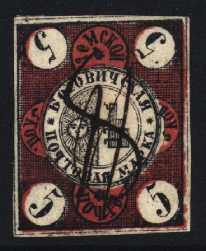
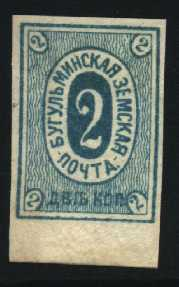
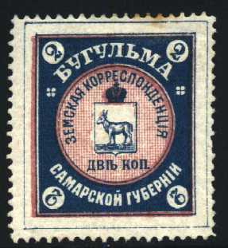
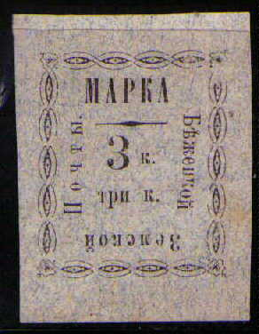

(Reduced size)
Return To Catalogue - Zemstvos Overview - Russia
Note: on my website many of the
pictures can not be seen! They are of course present in the
catalogue;
contact me if you want to purchase it.
1869

5 k black and red
1872 Lozenge-shaped stamp
(Reduced size)
5 k black and red
1874 Arms
3 k black and blue (1876) 3 k black and green (1878, different size) 5 k black and red
1876 Text
3 k bronze (rare)
1886 Arms, different type

3 k red (perforated or imperforated)
1898 Arms, different type

3 k brown
1868 Number

5 k red (imperforated, 2 types) 5 k blue and lilac (perforated, 2 types, 1893)
1882 Number


2 k blue (white number in the corners, rare) 2 k blue (coloured numbers in the corners, the upper numbers upside down) 2 k blue (coloured numbers in the corners, 3 types)
1884 New type

(Reduced size)
2 k brown (1884) 2 k blue (1892) 2 k green (1899, perforated, exists with blue control number overprint) 2 k red (1894, perforated, exists with blue control number overprint) 2 k black and green (1908)
1899 Arms


2 k blue and orange 2 k blue and orange (larger size, one more blue outer line) 2 k blue and red 3 k black and green (1915)
1904 Multicoloured stamps
2 k blue, black, red, green and yellow (exists with control number overprint)
Number, various frames
Perforated
(Reduced size)
2 k black (1879) 2 k black on lilac (1879 and 1881, 2 types) Imperforate
2 k black on lilac (1884) 2 k red (1890) 2 k violet (1890)
1916 Arms
(Sorry, no picture available yet)
5 k blue
Number, various frames, imperforated
3 k blue (1876, rare) 3 k green and red (1876, rare) 3 k red and blue (1877, rare) 3 k green and red (red number, 1877, rare) 3 k green and red (green number, 1877, rare) 3 k black
Number in an oval (1883)
No arms in upper part

3 k lilac (imperforate or perforated) Arms in upper part
3 k red (imperforate)
1907 Arms

3 k blue 3 k brown (1910)

Unlisted surcharge? '10' (violet) on 3 k brown.

Different type? The head of the animal is different.
Text, various frames

(Reduced sizes)
3 k black on green '3 k' at the bottom (1872) 3 k black on lilac, 4 lines of text, '3 k' in the second line (1872) 3 k black on lilac, '3 k' in the middle, lines around text (1878) 3 k black on green '3 kon' at the bottom (1881) 3 k black on lilac, '3 k' in the middle, crosses around text (1885) 3 k black on blue, '3 k' with crown (1886) 3 k black on lilac (text in circle, 1892)
1893 Text, with ovals as border



3 k black on grey 3 k black on lilac 3 k black on blue Exist with black bar under the word 'MAPKA'
1894 Arms


3 k black on grey 3 k black on lilac 3 k black on blue 3 k black on green 3 k black
Envelopes in the same design exist.


{kind=link}
{kind=link}